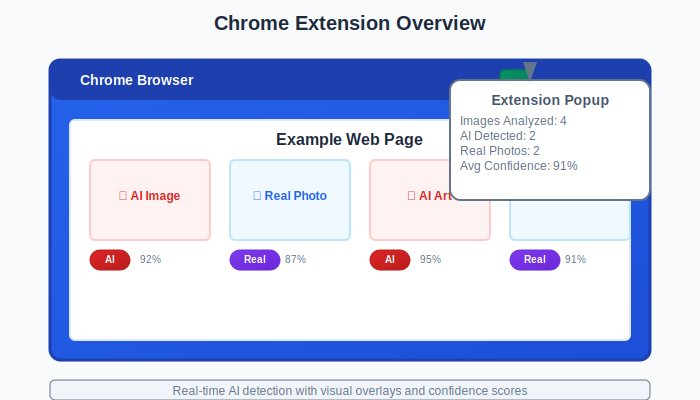
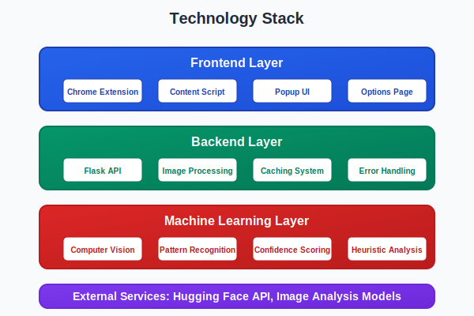

About the Project¶
What is Image AI Detector?¶
Image AI Detector is a Chrome extension that helps you identify whether images you see online are real photographs or AI-generated content. Think of it as a “truth detector” for images - it analyzes pictures in real-time and tells you how likely they are to be created by artificial intelligence.
{kind=link}
Why This Matters¶
In today’s digital world, AI-generated images are becoming increasingly sophisticated and widespread. From social media to news websites, it’s getting harder to distinguish between:
📸 Real photographs taken by cameras
🤖 AI-generated images created by tools like DALL-E, Midjourney, or Stable Diffusion
This matters because:
Misinformation: AI images can be used to spread fake news
Trust: We need to know what’s real when making decisions
Transparency: Understanding what’s AI-generated helps us navigate the digital landscape
Education: Learning to spot AI content is becoming an essential skill
How It Works¶
The extension works like a smart assistant that:
Scans the page when you click the extension icon
Analyzes each image using advanced computer vision techniques
Provides instant results with confidence scores
Shows detailed analysis of what it found
User clicks extension
↓
Extension scans page
↓
Finds all images
↓
Analyzes each image
↓
ML model processes image
↓
Returns AI/Real classification
↓
Shows results with confidence
↓
User sees labeled images
Key Features¶
- ✅ Real-time Analysis
Instant results as you browse the web
- ✅ Visual Indicators
Clear badges and overlays on images
- ✅ Confidence Scores
Shows how certain the AI is about its classification
- ✅ Detailed Insights
Explains what characteristics led to the classification
- ✅ Privacy-First
Images are analyzed locally or through secure APIs
- ✅ Easy to Use
One-click activation, no technical knowledge required
Who Should Use This?¶
🎯 Everyone who browses the web - From students to professionals
🎯 Content creators - Verify the authenticity of images before sharing
🎯 Journalists and researchers - Fact-check visual content
🎯 Educators - Teach digital literacy and media awareness
🎯 Social media users - Make informed decisions about what to share
🎯 Business professionals - Ensure marketing materials are authentic
Technology Behind the Scenes¶
While the extension is simple to use, it’s powered by sophisticated technology:
{kind=link}
- Machine Learning Models
Advanced AI models trained to recognize patterns in images
- Computer Vision
Technology that “sees” and analyzes visual content
- Real-time Processing
Instant analysis without slowing down your browsing
- Secure APIs
Professional-grade image analysis services
Privacy & Security¶
🔒 Your privacy is protected:
Images are analyzed securely through trusted APIs
No personal data is stored or shared
Analysis happens in real-time without saving images
The extension only processes images you choose to analyze
Getting Started¶
Getting started is simple:
Install the extension from the Chrome Web Store
Visit any webpage with images
Click the extension icon
See instant results with AI/Real labels
{kind=link}
The Future of Image Verification¶
As AI technology evolves, tools like Image AI Detector will become increasingly important. We’re working on:
More accurate detection of the latest AI models
Video analysis capabilities
Batch processing for multiple images
Integration with other verification tools
This project represents a step toward a more transparent and trustworthy digital world where users can make informed decisions about the content they consume and share.
Note
Remember: While our tool is highly accurate, no AI detection system is perfect. Always use critical thinking and verify important information through multiple sources.